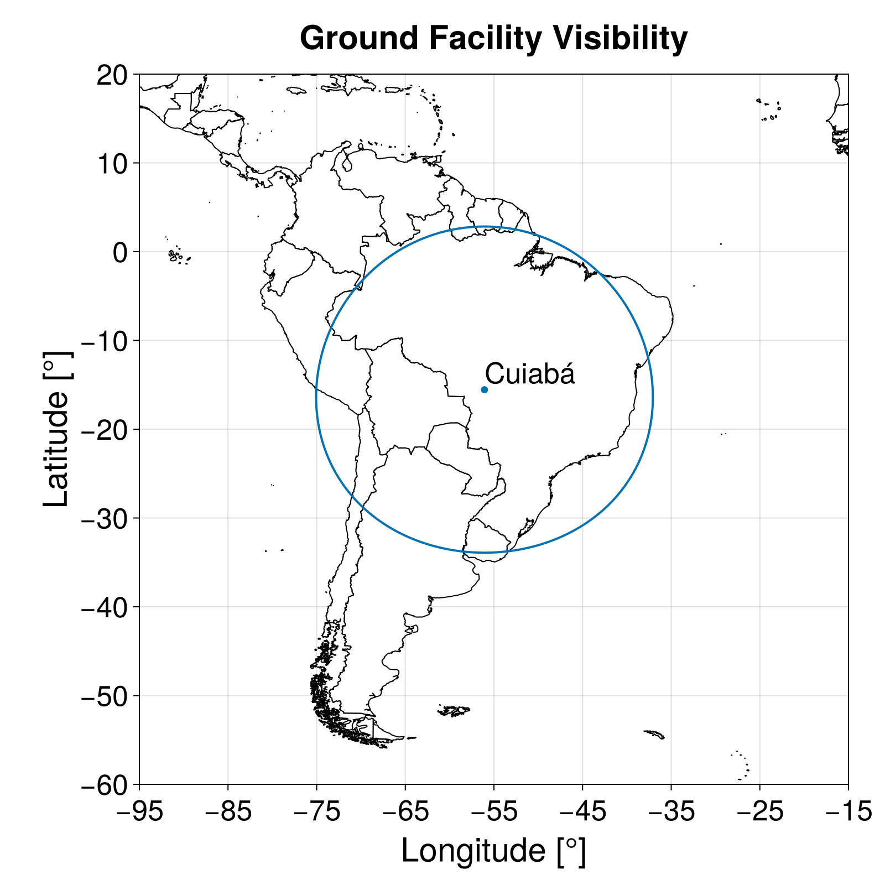
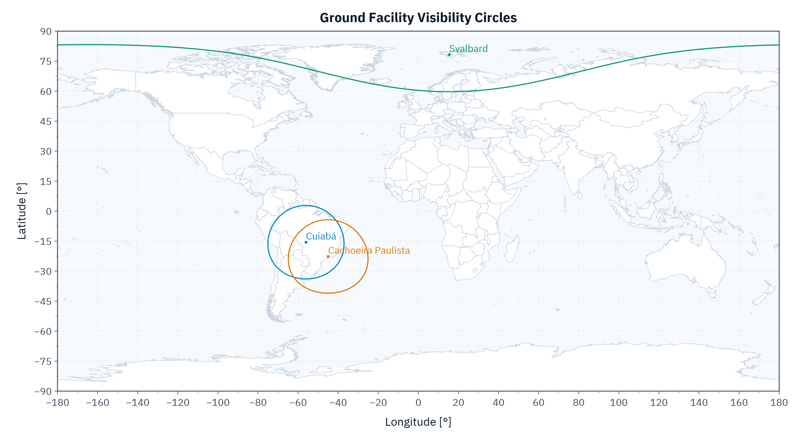

Ground Facility Visibility Circle
We can compute the visibility circle of a ground facility using the function ground_facility_visibility_circle:
SatelliteAnalysis.ground_facility_visibility_circle — Function
ground_facility_visibility_circle(gf_wgs84::Tuple, satellite_position_norm::Number; kwargs...) -> Vector{NTuple{2, Float64}}Compute the ground facility visibility circle from the position gf_wgs84 (WGS84) to a satellite in which its distance from the Earth's center is satellite_position_norm [m]. It returns a vector of NTuple{2, Float64} where the first element is the latitude [rad] and the second is the longitude [rad] of each point in the visibility circle.
The ground facility is specified using a tuple with its WGS84 position:
(latitude [rad], longitude [rad], altitude [m])Keywords
add_nans::Bool: Iftrue, we addNaNif there is a discontinuity in the visibility circle, which happens when it crosses the meridian ±180°, to improve plotting. (Default: true)azimuth_step::Number: The step in the azimuth [rad] used to compute the visibility circle. (Default: 0.1 |> deg2rad)minimum_elevation::Number: Minimum elevation angle for communication between the satellite and the ground facility [rad]. (Default: 10 |> deg2rad)
Extended Help
Throws
ArgumentError: Ifsatellite_position_normis not greater than the distance between the ground facility and the Earth's center.
Examples
julia> using SatelliteAnalysis, UnicodePlots
julia> gfv = ground_facility_visibility_circle((0, 0, 0), EARTH_EQUATORIAL_RADIUS + 700e3);
julia> lineplot(last.(gfv) .|> rad2deg, first.(gfv) .|> rad2deg; xlim = (-180, 180), ylim = (-90, 90))
┌────────────────────────────────────────┐
90 │⠀⠀⠀⠀⠀⠀⠀⠀⠀⠀⠀⠀⠀⠀⠀⠀⠀⠀⠀⠀⡇⠀⠀⠀⠀⠀⠀⠀⠀⠀⠀⠀⠀⠀⠀⠀⠀⠀⠀⠀│
│⠀⠀⠀⠀⠀⠀⠀⠀⠀⠀⠀⠀⠀⠀⠀⠀⠀⠀⠀⠀⡇⠀⠀⠀⠀⠀⠀⠀⠀⠀⠀⠀⠀⠀⠀⠀⠀⠀⠀⠀│
│⠀⠀⠀⠀⠀⠀⠀⠀⠀⠀⠀⠀⠀⠀⠀⠀⠀⠀⠀⠀⡇⠀⠀⠀⠀⠀⠀⠀⠀⠀⠀⠀⠀⠀⠀⠀⠀⠀⠀⠀│
│⠀⠀⠀⠀⠀⠀⠀⠀⠀⠀⠀⠀⠀⠀⠀⠀⠀⠀⠀⠀⡇⠀⠀⠀⠀⠀⠀⠀⠀⠀⠀⠀⠀⠀⠀⠀⠀⠀⠀⠀│
│⠀⠀⠀⠀⠀⠀⠀⠀⠀⠀⠀⠀⠀⠀⠀⠀⠀⠀⠀⠀⡇⠀⠀⠀⠀⠀⠀⠀⠀⠀⠀⠀⠀⠀⠀⠀⠀⠀⠀⠀│
│⠀⠀⠀⠀⠀⠀⠀⠀⠀⠀⠀⠀⠀⠀⠀⠀⠀⠀⠀⠀⡇⠀⠀⠀⠀⠀⠀⠀⠀⠀⠀⠀⠀⠀⠀⠀⠀⠀⠀⠀│
│⠀⠀⠀⠀⠀⠀⠀⠀⠀⠀⠀⠀⠀⠀⠀⠀⠀⠀⡼⠉⡏⢧⠀⠀⠀⠀⠀⠀⠀⠀⠀⠀⠀⠀⠀⠀⠀⠀⠀⠀│
│⠤⠤⠤⠤⠤⠤⠤⠤⠤⠤⠤⠤⠤⠤⠤⠤⠤⠤⡧⠤⡧⢼⠤⠤⠤⠤⠤⠤⠤⠤⠤⠤⠤⠤⠤⠤⠤⠤⠤⠤│
│⠀⠀⠀⠀⠀⠀⠀⠀⠀⠀⠀⠀⠀⠀⠀⠀⠀⠀⢳⣀⣇⡞⠀⠀⠀⠀⠀⠀⠀⠀⠀⠀⠀⠀⠀⠀⠀⠀⠀⠀│
│⠀⠀⠀⠀⠀⠀⠀⠀⠀⠀⠀⠀⠀⠀⠀⠀⠀⠀⠀⠀⡇⠀⠀⠀⠀⠀⠀⠀⠀⠀⠀⠀⠀⠀⠀⠀⠀⠀⠀⠀│
│⠀⠀⠀⠀⠀⠀⠀⠀⠀⠀⠀⠀⠀⠀⠀⠀⠀⠀⠀⠀⡇⠀⠀⠀⠀⠀⠀⠀⠀⠀⠀⠀⠀⠀⠀⠀⠀⠀⠀⠀│
│⠀⠀⠀⠀⠀⠀⠀⠀⠀⠀⠀⠀⠀⠀⠀⠀⠀⠀⠀⠀⡇⠀⠀⠀⠀⠀⠀⠀⠀⠀⠀⠀⠀⠀⠀⠀⠀⠀⠀⠀│
│⠀⠀⠀⠀⠀⠀⠀⠀⠀⠀⠀⠀⠀⠀⠀⠀⠀⠀⠀⠀⡇⠀⠀⠀⠀⠀⠀⠀⠀⠀⠀⠀⠀⠀⠀⠀⠀⠀⠀⠀│
│⠀⠀⠀⠀⠀⠀⠀⠀⠀⠀⠀⠀⠀⠀⠀⠀⠀⠀⠀⠀⡇⠀⠀⠀⠀⠀⠀⠀⠀⠀⠀⠀⠀⠀⠀⠀⠀⠀⠀⠀│
-90 │⠀⠀⠀⠀⠀⠀⠀⠀⠀⠀⠀⠀⠀⠀⠀⠀⠀⠀⠀⠀⡇⠀⠀⠀⠀⠀⠀⠀⠀⠀⠀⠀⠀⠀⠀⠀⠀⠀⠀⠀│
└────────────────────────────────────────┘
⠀-180⠀⠀⠀⠀⠀⠀⠀⠀⠀⠀⠀⠀⠀⠀⠀⠀⠀⠀⠀⠀⠀⠀⠀⠀⠀⠀⠀⠀⠀⠀⠀⠀⠀180⠀
julia> gfv = ground_facility_visibility_circle((-40 |> deg2rad, -60 |> deg2rad, 700), EARTH_EQUATORIAL_RADIUS + 700e3);
julia> lineplot(last.(gfv) .|> rad2deg, first.(gfv) .|> rad2deg; xlim = (-180, 180), ylim = (-90, 90))
┌────────────────────────────────────────┐
90 │⠀⠀⠀⠀⠀⠀⠀⠀⠀⠀⠀⠀⠀⠀⠀⠀⠀⠀⠀⠀⡇⠀⠀⠀⠀⠀⠀⠀⠀⠀⠀⠀⠀⠀⠀⠀⠀⠀⠀⠀│
│⠀⠀⠀⠀⠀⠀⠀⠀⠀⠀⠀⠀⠀⠀⠀⠀⠀⠀⠀⠀⡇⠀⠀⠀⠀⠀⠀⠀⠀⠀⠀⠀⠀⠀⠀⠀⠀⠀⠀⠀│
│⠀⠀⠀⠀⠀⠀⠀⠀⠀⠀⠀⠀⠀⠀⠀⠀⠀⠀⠀⠀⡇⠀⠀⠀⠀⠀⠀⠀⠀⠀⠀⠀⠀⠀⠀⠀⠀⠀⠀⠀│
│⠀⠀⠀⠀⠀⠀⠀⠀⠀⠀⠀⠀⠀⠀⠀⠀⠀⠀⠀⠀⡇⠀⠀⠀⠀⠀⠀⠀⠀⠀⠀⠀⠀⠀⠀⠀⠀⠀⠀⠀│
│⠀⠀⠀⠀⠀⠀⠀⠀⠀⠀⠀⠀⠀⠀⠀⠀⠀⠀⠀⠀⡇⠀⠀⠀⠀⠀⠀⠀⠀⠀⠀⠀⠀⠀⠀⠀⠀⠀⠀⠀│
│⠀⠀⠀⠀⠀⠀⠀⠀⠀⠀⠀⠀⠀⠀⠀⠀⠀⠀⠀⠀⡇⠀⠀⠀⠀⠀⠀⠀⠀⠀⠀⠀⠀⠀⠀⠀⠀⠀⠀⠀│
│⠀⠀⠀⠀⠀⠀⠀⠀⠀⠀⠀⠀⠀⠀⠀⠀⠀⠀⠀⠀⡇⠀⠀⠀⠀⠀⠀⠀⠀⠀⠀⠀⠀⠀⠀⠀⠀⠀⠀⠀│
│⠤⠤⠤⠤⠤⠤⠤⠤⠤⠤⠤⠤⠤⠤⠤⠤⠤⠤⠤⠤⡧⠤⠤⠤⠤⠤⠤⠤⠤⠤⠤⠤⠤⠤⠤⠤⠤⠤⠤⠤│
│⠀⠀⠀⠀⠀⠀⠀⠀⠀⠀⠀⠀⠀⠀⠀⠀⠀⠀⠀⠀⡇⠀⠀⠀⠀⠀⠀⠀⠀⠀⠀⠀⠀⠀⠀⠀⠀⠀⠀⠀│
│⠀⠀⠀⠀⠀⠀⠀⠀⠀⠀⠀⣠⠖⠒⢦⡀⠀⠀⠀⠀⡇⠀⠀⠀⠀⠀⠀⠀⠀⠀⠀⠀⠀⠀⠀⠀⠀⠀⠀⠀│
│⠀⠀⠀⠀⠀⠀⠀⠀⠀⠀⢰⠃⠀⠀⠀⢹⠀⠀⠀⠀⡇⠀⠀⠀⠀⠀⠀⠀⠀⠀⠀⠀⠀⠀⠀⠀⠀⠀⠀⠀│
│⠀⠀⠀⠀⠀⠀⠀⠀⠀⠀⠸⣄⠀⠀⠀⣸⠀⠀⠀⠀⡇⠀⠀⠀⠀⠀⠀⠀⠀⠀⠀⠀⠀⠀⠀⠀⠀⠀⠀⠀│
│⠀⠀⠀⠀⠀⠀⠀⠀⠀⠀⠀⠈⠙⠒⠋⠁⠀⠀⠀⠀⡇⠀⠀⠀⠀⠀⠀⠀⠀⠀⠀⠀⠀⠀⠀⠀⠀⠀⠀⠀│
│⠀⠀⠀⠀⠀⠀⠀⠀⠀⠀⠀⠀⠀⠀⠀⠀⠀⠀⠀⠀⡇⠀⠀⠀⠀⠀⠀⠀⠀⠀⠀⠀⠀⠀⠀⠀⠀⠀⠀⠀│
-90 │⠀⠀⠀⠀⠀⠀⠀⠀⠀⠀⠀⠀⠀⠀⠀⠀⠀⠀⠀⠀⡇⠀⠀⠀⠀⠀⠀⠀⠀⠀⠀⠀⠀⠀⠀⠀⠀⠀⠀⠀│
└────────────────────────────────────────┘
⠀-180⠀⠀⠀⠀⠀⠀⠀⠀⠀⠀⠀⠀⠀⠀⠀⠀⠀⠀⠀⠀⠀⠀⠀⠀⠀⠀⠀⠀⠀⠀⠀⠀⠀180⠀ If we want to verify if a satellite has line-of-sight to a ground facility, see the function is_ground_facility_visible.
Examples
We can obtain the visibility circle between the Amazonia-1 satellite and INPE's ground station at Cuiabá, MT, Brazil, using:
julia> ground_facility_visibility_circle( (-(15 + 33 / 60) |> deg2rad, -(56 + 04 / 60) |> deg2rad, 0), 7130.982e3 )3602-element Vector{Tuple{Float64, Float64}}: (-0.5917850924699235, -0.9785479339514876) (-0.5917845368680631, -0.9792067036234945) (-0.5917828700653929, -0.979865470107842) (-0.5917800920706476, -0.9805242302169138) (-0.5917762028983844, -0.981182980763179) (-0.5917712025689826, -0.981841718559236) (-0.591765091108644, -0.9825004404178551) (-0.5917578685493923, -0.983159143152021) (-0.5917495349290721, -0.983817823574976) (-0.591740090291349, -0.9844764785002632) ⋮ (-0.5917578685493922, -0.9739367247509539) (-0.591765091108644, -0.9745954274851202) (-0.5917712025689825, -0.9752541493437392) (-0.5917762028983844, -0.9759128871397963) (-0.5917800920706476, -0.9765716376860615) (-0.591782870065393, -0.9772303977951331) (-0.5917845368680631, -0.9778891642794806) (-0.5917850924699235, -0.9785479339514875) (-0.5917845368680631, -0.9792067036234944)
If we plot the result using Makie, we obtain:

Plotting
If the user loads the package GeoJSON.jl together with a Makie.jl backend, an extension is loaded and adds the possibility to plot the ground facility visibility circle. In this case, the following functions are available:
SatelliteAnalysis.plot_ground_facility_visibility_circles — Function
plot_ground_facility_visibility_circles(vgf_vc::Vector{Vector{NTuple{2, T}}}; kwargs...) where {T <: Number} -> Figure, AxisPlot the ground facility visibility circles in the vector vgf_vc, where each element is computed using the function ground_facility_visibility_circle. It returns the objects Figure and Axis used to plot the data. For more information, please refer to Makie.jl documentation.
This function plots the countries' borders in the created figure using the file with the country polygons fetched with the function fetch_country_polygons. Hence, if this file does not exist, the algorithm tries to download it.
This function only works after loading the package GeoJSON.jl and one Makie.jl backend (CairoMakie.jl or GLMakie.jl, for example).
Keywords
ground_facilities::Union{Nothing, AbstractVector{<:Tuple}}: Vector with the WGS84 position of each ground facility(latitude [rad], longitude [rad], altitude [m]), as used to compute the visibility circles, which selects the position of the ground facility markers. If it isnothing, the positions are estimated using the visibility circles. (Default =nothing)ground_facility_names::Union{Nothing, AbstractVector{<:AbstractString}}: The user can provide a vector of strings with the length ofvgf_vcto be plotted with the visibility circles. If this parameter isnothing, no ground facility name is added to the figure. (Default =nothing)theme::Union{Nothing, Symbol, Makie.Theme}: Theme used to style the figure, which is applied locally. If it is aSymbol, it selects the variant of the theme created by the functionSatelliteAnalysis.makie_theme, which can be:lightor:dark. If it is aMakie.Theme, this theme is applied. If it isnothing, no theme is applied, and the figure uses the current Makie theme. In the last two cases, the elements that are not styled by the theme use the colors of the variant:light. (Default::light)
All other kwargs... are passed to the function plot_world_map.
Extended help
Throws
ArgumentError: If the theme variant inthemeis not:darkor:light.
Examples
julia> using SatelliteAnalysis, GeoJSON, GLMakie
julia> gfv1 = ground_facility_visibility_circle((0, 0, 0), EARTH_EQUATORIAL_RADIUS + 700e3);
julia> gfv2 = ground_facility_visibility_circle((-40 |> deg2rad, -60 |> deg2rad, 0), EARTH_EQUATORIAL_RADIUS + 700e3);
julia> fig, ax = plot_ground_facility_visibility_circles(
[gfv1, gfv2];
ground_facility_names = ["GF 1", "GF 2"]
);
julia> figSatelliteAnalysis.plot_ground_facility_visibility_circles! — Function
plot_ground_facility_visibility_circles!(ax::Axis, vgf_vc::Vector{Vector{NTuple{2, T}}}; kwargs...) where {T <: Number} -> Vector{Lines}Plot in the Makie.jl axis ax the ground facility visibility circles in the vector vgf_vc, where each element is computed using the function ground_facility_visibility_circle. It returns a vector with the plot of each visibility circle, which can be used, for example, to build a legend.
Since this function draws into an existing axis, it does not apply the theme provided by the function SatelliteAnalysis.makie_theme. The plot inherits the styling of the figure that owns ax.
This function only works after loading the package GeoJSON.jl and one Makie.jl backend (CairoMakie.jl or GLMakie.jl, for example).
Keywords
ground_facilities::Union{Nothing, AbstractVector{<:Tuple}}: Vector with the WGS84 position of each ground facility(latitude [rad], longitude [rad], altitude [m]), as used to compute the visibility circles, which selects the position of the ground facility markers. If it isnothing, the positions are estimated using the visibility circles. (Default =nothing)ground_facility_names::Union{Nothing, AbstractVector{<:AbstractString}}: The user can provide a vector of strings with the length ofvgf_vcto be plotted with the visibility circles. If this parameter isnothing, no ground facility name is added to the figure. (Default =nothing)
All other kwargs... are passed to the function lines! that plots each visibility circle, allowing the selection of attributes such as linestyle and linewidth.
Extended Help
Examples
julia> using SatelliteAnalysis, GeoJSON, GLMakie
julia> gfv1 = ground_facility_visibility_circle((0, 0, 0), EARTH_EQUATORIAL_RADIUS + 700e3);
julia> gfv2 = ground_facility_visibility_circle((-40 |> deg2rad, -60 |> deg2rad, 0), EARTH_EQUATORIAL_RADIUS + 700e3);
julia> fig = Figure(size = (1000, 1000))
julia> ax = Axis(fig[1, 1])
julia> plot_ground_facility_visibility_circles!(
ax,
[gfv1, gfv2];
ground_facility_names = ["GF 1", "GF 2"]
)Example
The code:
julia> using GeoJSON, CairoMakiejulia> gf1_vc = ground_facility_visibility_circle( (-(15 + 33 / 60) |> deg2rad, -(56 + 04 / 60) |> deg2rad, 0), 7130.982e3 );julia> gf2_vc = ground_facility_visibility_circle( (-22.6763 |> deg2rad, -44.9973 |> deg2rad, 0), 7130.982e3 );julia> gf3_vc = ground_facility_visibility_circle( (+78.228 |> deg2rad, +15.399 |> deg2rad, 0), 7130.982e3 );julia> fig, ax = plot_ground_facility_visibility_circles( [gf1_vc, gf2_vc, gf3_vc]; ground_facility_names = ["Cuiabá", "Cachoeira Paulista", "Svalbard"] );julia> save("gf_visibility_circle_02.png", fig)
produces the following figure:
